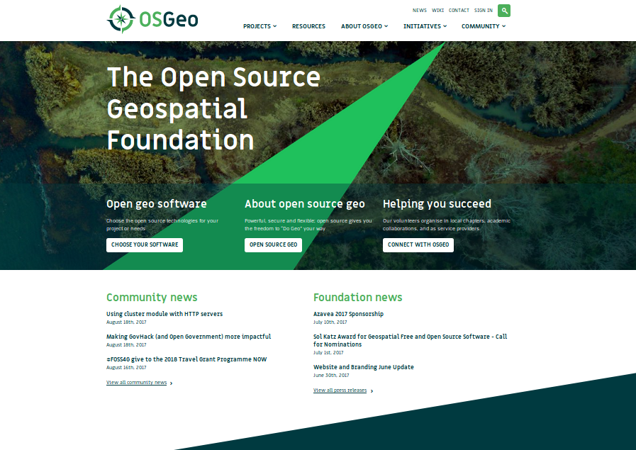
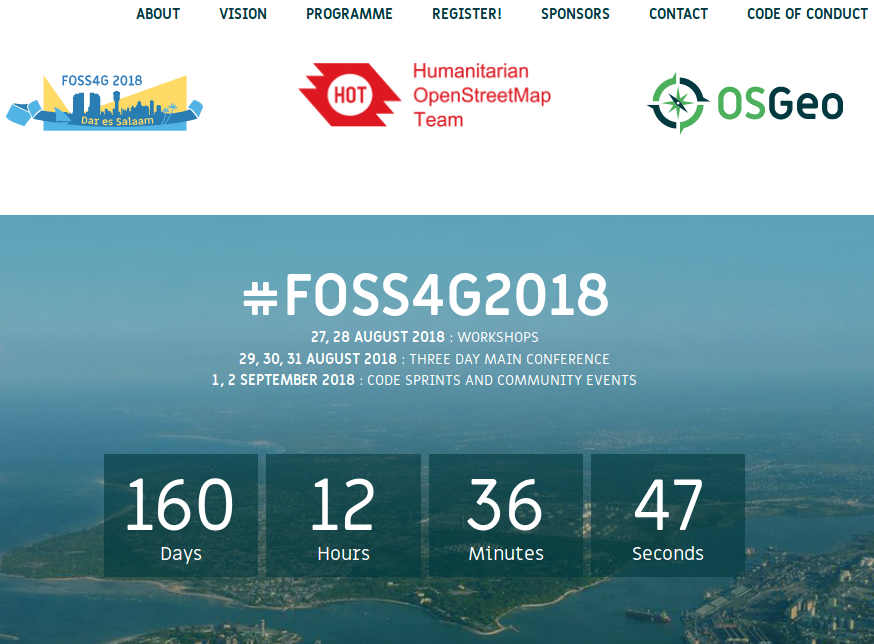
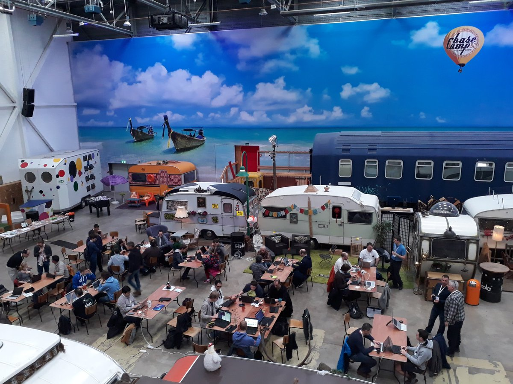
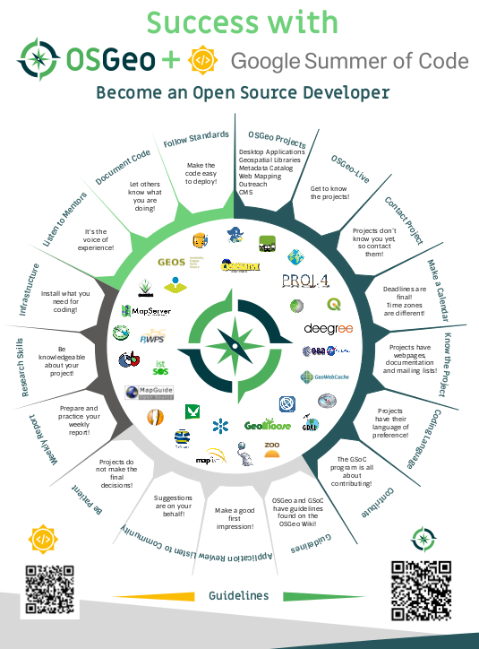
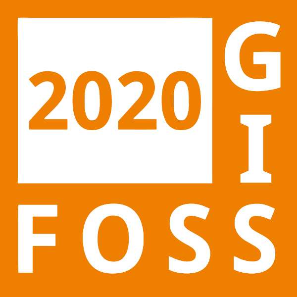

class: center, middle, title # Was ist Open Source, was sind freie Daten und wie funktioniert das Alles? ## Ein Blick auf Daten, Software und den FOSSGIS e.V. .small[FOSSGIS Konferenz 2020, Freiburg i. Breisgau] <br> .small[Hanna Krüger & Marco Lechner & Thomas Skowron] --- # Agenda - Open Source und Freie Software - Institutionen - Tour de FOSS4G von .italic[Felix Kunde] - Einführung in OpenStreetMap von .italic[Wolfgang Hinsch] --- # Open Source und Freie Software - Freie Software nutzen - Freie Software entwickeln (lassen) - Mitmachen für jedermann --- # Philosophie - Die 4 Freiheiten Freier Software - https://fsfe.org/about/basics/freesoftware.de.html --- # Freie Software nutzen - Freie Software installieren - Freie Software und Dokumentation - https://qgis.org/de/docs/index.html - Schulungen für Freie Software --- # Support ## Wie bekomme ich Hilfe bei Problemen? - frei und schnell: IRC - <#project>@freenode - frei und ausführlich - Mailinglisten - deutsch: https://lists.fossgis.de/listinfo - fossgis-talk: https://lists.fossgis.de/mailman/listinfo/fossgis-talk-liste - international: https://lists.osgeo.org/mailman/listinfo - professionell - SLAs: https://www.osgeo.org/service-providers --- # Freie Software entwickeln - Die 4 Freiheiten Freier Software - Das Ding mit den Lizenzen - https://choosealicense.com - Richtig ausschreiben - Community building --- # Woran erkenne ich ein gutes Open Source Projekt? - OSGeo projects - https://www.osgeo.org/projects/ - Aktivität - https://live.osgeo.org/de/metrics.html - https://www.openhub.net/p?ref=homepage&query=GIS --- # Ist Open Source Software immer kostenlos? - was erwarten Sie von Freier Software? - wieviel sind Sie bereit für gute Software zu bezahlen? - wofür möchten Sie zahlen? - Lizenzen, Werbung, Abhängigkeiten - Programmierarbeit, Freiheit, Gemeinschaft --- # Mitmachen für jedermann / -frau - Programmieren? Puh muss nicht sein. - Dokumentieren - Nutzen - Melden statt Motzen --- # Institutionen - FOSSGIS e.V. - OSMF - OSGeo Foundation --- class: center, middle, title # OSGeo Foundation .center[] --- # Empower everyone with open source geospatial - OSGeo ist gemeinnützig - Propagiert OSGeo Technologie, offene Standards und Daten - OSGeo wird von Freiwilligen getragen - weltweite Community - Gründung 2006 .center[<img src="img/logos/osgeo.png" width="40%">] --- # Open Geospatial - Open Source: Sicherstellung der gemeinschaftlichen Softwareentwicklung in der Community - Open Data: Bereitstellung frei verfügbarer Daten zur beliebigen Nutzung - Offene Standards: ermöglichen interoperable Software und vermeiden Abhängigkeiten - Offene Ausbildung: beseitigt die Schwellen zum Lernen und Lehren .center[<img src="img/logos/osgeo.png" width="40%">] --- # OSGeo Struktur - 9 Board Members - 25 Local Chapters - 390 OSGeo Charter Members - 23 Projekte, 6 Incubations-Projekte, 6 Community-Projekte .center[<img src="img/logos/osgeo.png" width="40%">] --- # OSGeo Aktivitäten - jährliche globale FOSS4G Konferenz .center[] --- # OSGeo Aktivitäten - FOSS4G Europe 26.-21. Juli 2018, Guimarães - FOSS4Gs auf der ganzen Welt --- # OSGeo Aktivitäten - OSGeo Code Sprints - aktuell im BaseCamp in Bonn .center[] --- # Google Summer of Code .center[] --- class: center # Dankeschön .left-column[ Astrid Emde<br> `astrid.emde@fossgis.de`<br> `@astroidex` ] .right-column[ Dominik Helle<br> `dominik.helle@fossgis.de`<br> `@geododo` ] .left-column[ Marco Lechner<br> `marco.lechner@fossgis.de`<br> `@marcolechner` ] .right-column[ Till Adams<br> `till.adams@fossgis.de`<br> `@t_adams` ] --- class: center, middle # Fragen? --- # Viel Spaß auf der FOSSGIS Konferenz 2020! .center[] ## Nicht verpassen! - Abendveranstaltung am Mittwoch "Schwätzli uffm Campus" - FOSSGIS e.V. Vollversammlung am Donnerstag - OSM Quiz am Freitag - Sektempfang des FOSSGIS e.V. am Freitag # Danke